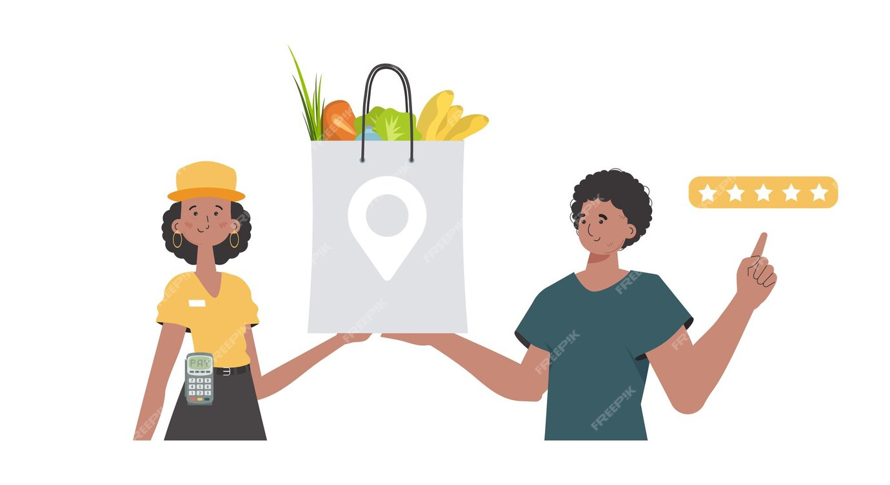
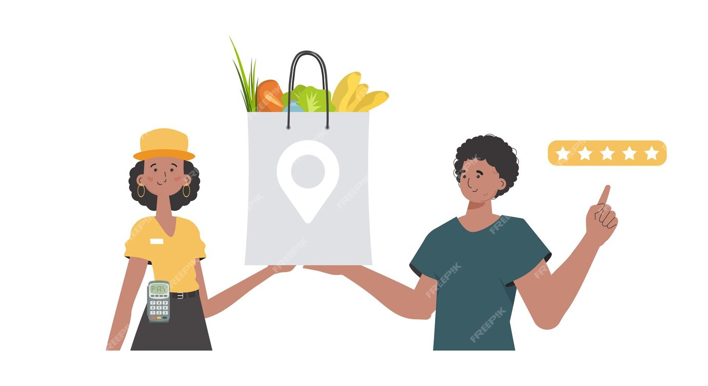

Local Harvest is revolutionizing the way consumers connect with their food sources by bridging the gap between local farmers and customers. By cutting out the middlemen, we ensure that you receive the freshest produce at a fair price while maximizing profits for the farmers themselves. Our mission is simple yet profound: to empower farmers and provide customers with quality products directly from the source.
We believe in supporting sustainable agricultural practices that benefit both the environment and the community. Our platform offers a diverse selection of fruits, vegetables, and dairy products, all sourced from farms committed to ethical and eco-friendly farming methods. By choosing Local Harvest, you are not only investing in your health but also in the well-being of local farming communities.
Join us in our mission to transform the food industry. Together, we can promote a healthier lifestyle and a more sustainable future. Experience the difference of knowing where your food comes from and the satisfaction of contributing to a more equitable food system. At Local Harvest, we are dedicated to providing transparency, quality, and unparalleled service. Thank you for supporting local agriculture and making a positive impact on our planet.
 
